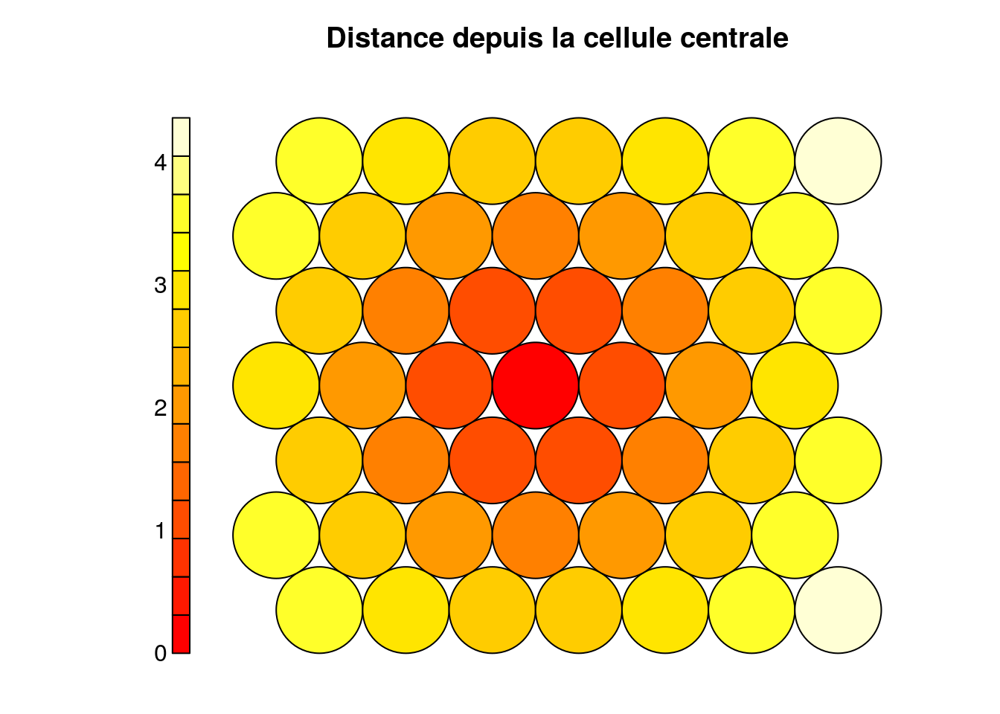
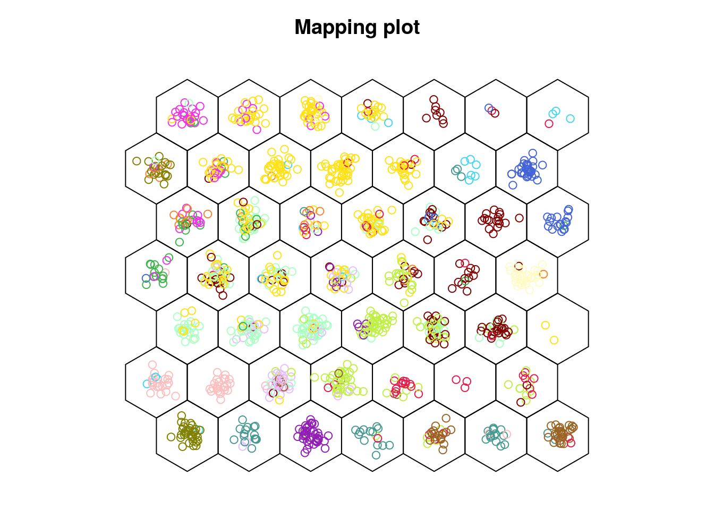
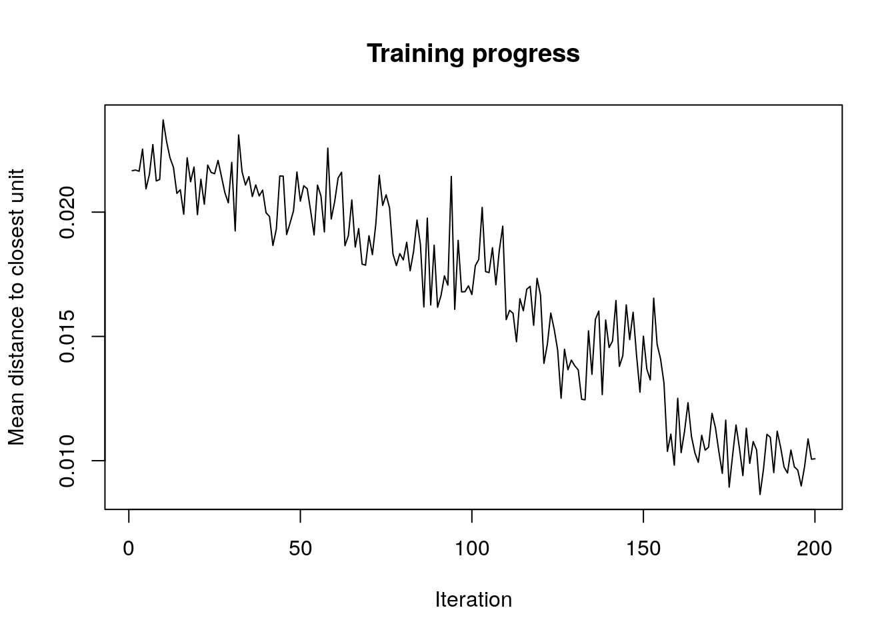

6.3 Cartes auto-adaptatives (SOM)
Le positionnement multidimensionnel faisant appel à une matrice de distances entre tous les individus, les calculs deviennent vite pénalisants au fur et à mesure que le jeu de données augmente en taille. En général, les calculs sont assez lents. Nous verrons au module suivant que l’analyse en composantes principales apporte une réponse intéressante à ce problème, mais nous contraint à étudier des corrélations linéaires et des distances de type euclidiennes.
Une approche radicalement différente, qui reste plus générale car non linéaire, est la méthode des cartes auto-adaptatives, ou encore, cartes de Kohonen du nom de son auteur se désigne par “self-organizing map” en anglais. L’acronyme SOM est fréquemment utilisé, même en français. Cette technique va encore une fois exploiter une matrice de distances dans le but de représenter les individus sur une carte. Cette fois-ci, la carte contient un certain nombre de cellules qui forment une grille, ou mieux, une disposition en nid d’abeille (nous verrons plus loin pourquoi cette disposition particulière est intéressante). De manière similaire au MDS, nous allons faire en sorte que des individus similaires soient proches sur la carte, et des individus différents soient éloignés. La division de la carte en différentes cellules permet de regrouper les individus. Ceci permet une classification comme pour la CAH ou les k-moyennes. Les SOM apparaissent donc comme une technique hybride entre ordination (représentation sur des cartes) et classification (regroupement des individus).
La théorie et les calculs derrière les SOM sont très complexes. Elles font appel aux réseaux de neurones adaptatifs et leur fonctionnement est inspiré de celui du cerveau humain. Tout comme notre cerveau, les SOM vont utiliser l’information en entrée pour aller assigner une zone de traitement de l’information (pour notre cerveau) ou une cellule dans la carte (pour les SOM). Étant donné la complexité du calcul, les développement mathématiques n’ont pas leur place dans ce cours. Ce qui importe, c’est de comprendre le concept, et d’être ensuite capable d’utiliser les SOM à bon escient. Uniquement pour ceux d’entre vous qui désirent comprendre les détails du calcul, vous pouvez lire ici ou visionner la vidéo suivante (facultative et en anglais) :
Plutôt que de détailler les calculs, nous vous montrons ici comment un ensemble de pixels de couleurs différentes est organisé sur une carte SOM de Kohonen en un pattern infiniment plus cohérent… automatiquement (cet example est proposé par Frédéric De Lène Mirouze dans son blog).
Image créée artificiellement avec disposition aléatoire des pixels.
Carte SOM obtenue à partir de l’image précédente : les pixels sont automatiquement triés par couleur sur la carte.
Ce qui est évident sur un exemple aussi visuel que celui-ci fonctionne aussi très bien pour ranger les individus dans un tableau multivarié a priori cahotique comme ceux que nous rencontrons régulièrement en statistiques multivariées en biologie.
6.3.1 SOM sur le zooplancton
Reprenons notre exemple du zooplankton.
zoo <- read("zooplankton", package = "data.io")
zoo# # A tibble: 1,262 x 20
# ecd area perimeter feret major minor mean mode min max std_dev
# <dbl> <dbl> <dbl> <dbl> <dbl> <dbl> <dbl> <dbl> <dbl> <dbl> <dbl>
# 1 0.770 0.465 4.45 1.32 1.16 0.509 0.363 0.036 0.004 0.908 0.231
# 2 0.700 0.385 2.32 0.728 0.713 0.688 0.361 0.492 0.024 0.676 0.183
# 3 0.815 0.521 4.15 1.33 1.11 0.598 0.308 0.032 0.008 0.696 0.204
# 4 0.785 0.484 4.44 1.78 1.56 0.394 0.332 0.036 0.004 0.728 0.218
# 5 0.361 0.103 1.71 0.739 0.694 0.188 0.153 0.016 0.008 0.452 0.110
# 6 0.832 0.544 5.27 1.66 1.36 0.511 0.371 0.02 0.004 0.844 0.268
# 7 1.23 1.20 15.7 3.92 1.37 1.11 0.217 0.012 0.004 0.784 0.214
# 8 0.620 0.302 3.98 1.19 1.04 0.370 0.316 0.012 0.004 0.756 0.246
# 9 1.19 1.12 15.3 3.85 1.34 1.06 0.176 0.012 0.004 0.728 0.172
# 10 1.04 0.856 7.60 1.89 1.66 0.656 0.404 0.044 0.004 0.88 0.264
# # … with 1,252 more rows, and 9 more variables: range <dbl>, size <dbl>,
# # aspect <dbl>, elongation <dbl>, compactness <dbl>, transparency <dbl>,
# # circularity <dbl>, density <dbl>, class <fct>Les 19 premières colonnes représentent des mesures réalisées sur notre plancton et la vingtième est la classe. Nous nous débarasserons de la colonne classe et transformons les données numériques en matrice aporès avoir standardisé les données (étapes obligatoires) pour stocker le résultat dans zoo-mat.
zoo %>.%
select(., -class) %>.%
scale(.) %>.%
as.matrix(.) -> zoo_matAvant de pouvoir réaliser notre analyse, nous devons décider d’avance la topologie de la carte, c’est-à-dire, l’arrangement des cellules ainsi que le nombre de lignes et de colonnes. Nous verrons plus loin des outils pour nous y aider. Pour l’instant, considérons les deux topologies les plus fréquentes : la grille rectangulaire et la grille hexagonale. Plus le nombre de celluels est important, plus la carte sera détaillée, mais plus il nous faudra de données pour la calculer et la “peupler”. Considérons par exemple une grille 7 par 7 qui contient donc 49 celluels au total.
- La grille rectangulaire est celle qui vous vient probablement immédiatement à l’esprit. Il s’agit d’arranger les cellules en lignes horizontales et colonnes verticales. La fonction
somgrid()du packagekohonenpermet de créer une telle grille.
library(kohonen) # Charge le package kohonen#
# Attaching package: 'kohonen'# The following object is masked from 'package:purrr':
#
# maprect_grid_7_7 <- somgrid(7, 7, topo = "rectangular") # Crée la grilleIl n’y a pas de graphique chart ou ggplot2 dans le package kohonen. Nous utiliserons ici les graphiques de base de R. Pour visualiser la grille, il faut la transformer en un objet kohonen. Nous pouvons ajouter plein d’information sur la grille. Ici, nous rajoutons une propriété calculée à l’aide de unit.distances() qui est la distance des cellules de la carte par référence à la cellule centrale. Les cellules sont numérotées de 1 à n en partant en bas à gauche, en progressant le long de la ligne du bas vers la droite, et en reprenant à gauche à la ligne au dessus. Donc, la ligne du bas contient de gauche à droite les cellules n°1 à 7. La ligne au dessus contient les cellules n°8 à 14, et ainsi de suite. Donc la cellule du centre de la grille est la cellule n°25.
rect_grid_7_7 %>.%
# Transformartion en un objet de classe kohonen qui est une liste
structure(list(grid = .), class = "kohonen") %>.% # Objet de classe kohonen
plot(., type = "property", # Graphique de propriété
property = unit.distances(rect_grid_7_7)[25, ], # distance à la cellule 25
main = "Distance depuis la cellule centrale") # Titre du graphique
Les cellules de la grille ne sont pas disposées au hasard dans la carte SOM. Des relations de voisinage sont utilisées pour placer les individus à représenter dans des cellules adjacentes si ils se ressemblent. Avec une grille rectangulaire, nous avons donc deux modalités de variation : en horizontal et en vertival, ce qui donne deux gradients possibles qui, combinés donnent des extrêmes dans les coins opposés. Une cellule possède huits voisins directs.
L’autre topologie possible est la grille hexagonale. Voyons ce que cela donne :
hex_grid_7_7 <- somgrid(7, 7, topo = "hexagonal")
hex_grid_7_7 %>.%
# Transformartion en un objet de classe kohonen qui est une liste
structure(list(grid = .), class = "kohonen") %>.% # Objet de classe kohonen
plot(., type = "property", # Graphique de propriété
property = unit.distances(hex_grid_7_7)[25, ], # distance à la cellule 25
main = "Distance depuis la cellule centrale") # Titre du graphique
Ici, nous n’avons que six voisins directs, mais trois directions dans lesquelles les gradients peuvent varier : en horizontal, en diagonale vers la gauche et en diagonale vers la droite. Cela offre plus de possibilités pour l’agencement des individus. Nous voyons aussi plus de nuances dans les distances (il y a plus de couleurs différentes), pour une grille de même taille 7 par 7 que dans le cas de la grille rectangulaire. Nous utiliserons donc préférentiellement la grille hexagonale.
Effectuons maintenant le calcul de notre SOM à l’aide de la fonction som() du package kohonen. Comme l’analyse fait intervenir le générateur pseudo-aléatoire, nous pouvons utiliser de manière optionelle set.seed() avec un nombre choisi au hasard (et toujours différent à chaque utilisation) pour que cette analyse particulière-là soit reproductible. Sinon, à chaque exécution, nous obtiendrons un résultat légèrement différent.
set.seed(8657)
zoo_som <- som(zoo_mat, grid = somgrid(7, 7, topo = "hexagonal"))
summary(zoo_som)# SOM of size 7x7 with a hexagonal topology and a bubble neighbourhood function.
# The number of data layers is 1.
# Distance measure(s) used: sumofsquares.
# Training data included: 1262 objects.
# Mean distance to the closest unit in the map: 2.519.Le résumé de l’objet ne nous donne pas beaucoup d’info. C’est normal. La technique étant visuelle, ce qui est important, c’est de représenter graphiquement la carte. Avec les graphiques R de base, la fonction utilisée est plot(). Nous avons plusieurs types disponibles et une large palette d’options. Voyez l’aide en ligne de?plot.kohonen. Le premier graphique (type = "changes") montre l’évolution de l’apprentissage au fil des itérations. L’objectif est de descendre le plus possible sur l’axe des ordonnées pour réduire au maximum la distince des individus par rapprot à la cellule (unit en anglais) où ils devraient se placer. Idéalement, nous souhaitons tendre verss zéro. En pratique, nous pourrons arrêter les itération lorsque la courbe ne diminue plus de manière significative.
plot(zoo_som, type = "changes")
Ici, il semble que nous ne diminuons plus vraiment à partir de la 85ème itération environ. Nous pouvons nous en convaincre en relançant l’analyse avec un plus grand nombre d’itérations (avec l’argument rlen = de som()).
set.seed(954)
zoo_som <- som(zoo_mat, grid = somgrid(7, 7, topo = "hexagonal"), rlen = 200)
plot(zoo_som, type = "changes")
Vous serez sans doute surpris de constater que la diminution de la courbe se fait plus lentement maintenant. En fait som() va adapter son taux d’apprentissage en fonction du nombre d’itérations qu’on lui donne et va alors “peaufiner le travail” d’autant plus. Au final, la valeur n’est pas plus basse pour autant. Donc, nous avons aboutit probablement à une solution.
Le second graphique que nous pouvons réaliser consiste à placer les individus dans la carte, en utilisant éventuellement une couleur différente en fonction d’une caractéristique de ces individus (ici, leur classe). Ce graphique est obtenu avec type = "mapping". Si vous ne voulez pas représenter la grille hexagonale à l’aide de cercles, vous pouvez spécifier shape = "straight".
plot(zoo_som, type = "mapping", shape = "straight", col = zoo$class)
Nous voyons ici que, malgré que l’information contenue dans class n’ait pas été utilisées. Les différents individus de zooplancton ne se répartissent pas au hasard en fonction de ce critère. Nous pouyvons également voir les cellules qui contiennent plus ou moins d’individus, mais si l’objectif est de visionner uniquement le remplissage des cellules, le type = "counts" est plus adapté.
plot(zoo_som, type = "counts", shape = "straight")
Pour en savoir plus
Une explication très détaillée en français accompagnée de la résolution d’un exemple fictif résolu dans R.
Si vous êtes aventureux, vous pouvoez vous lancer dans la réimplémentation des graphiques du package
kohonenenchartouggplot2. Voici un bon point de départ (en anglais).